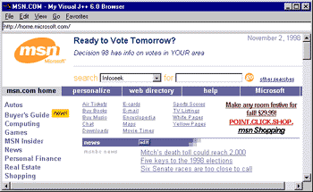

|
| ||
|
| ||
Michael Edwards
Developer Technology Engineer
This page demonstrates techniques from my article Installing Windows Applications via the Web with Visual Studio 6.0 for installing a custom browser I built with Visual J++ 6.0. While the purpose of this page is to apply my installation guidelines, some of you may find the application itself interesting (or at least will want to know what the heck it is before installing it). So first I'll talk about the browser -- what any publisher should do on a Web page about their application - and then I'll discuss some installation guidelines.
The sample is a Windows browser application that implements most of the features found in Internet Explorer. While you are welcome to use my browser as your preferred Web browser, I wrote the sample to demonstrate how Visual J++ applications can integrate browsing functionality by leveraging various publicly-supported Internet Explorer components.
Below is a screen shot of my browser in action:

There are a number of problems using the HTMLControl class with the Internet Explorer 5. These problems will be fixed in the final release of Internet Explorer 5. The sample application will still work, but certain important features won't function properly:
Reusing Browser Technology (in the Web Workshop) includes all the documentation you need in order to reuse browser technologies in your own application (including Reusing Internet Explorer and the WebBrowser Control: An Array of Options, an article Scott Roberts and I wrote about customizing Internet Explorer components).
Install the sample browser. You will be taken to one of two pages, depending upon whether you are using Internet Explorer or a Netscape browser.
Disclaimer -- this application is unsupported by me or Microsoft. However, if you have feedback or make any nifty improvements to it, I'd love to hear from you.
It is easier to install the sample application using an Internet Explorer browser because I can use script to detect whether the target computer has Internet Explorer 4 or 5 (via the navigator.userAgent string). Because wfc.ui.HTMLControl requires either Internet Explorer 4 or 5, we may need to update the copy of Internet Explorer on the target computer. Also, I use <OBJECT> tags to update two other dependencies, the Microsoft Virtual Machine for Java and the WBAddrBook component, without needing to include them in our self-extracting setup package (which will save umpteen hours of downloading for end-users with up-to-date versions).
If the end-user is browsing the install page with a Netscape browser, there is no pure scripting method available to determine if the target computer has Internet Explorer 4 or 5 installed. In that case, you could assume they don't have it, and offer a link to update their local copy of Internet Explorer before installing your application. That is what I am doing in this sample. There are other alternatives: 1) create a Netscape Plugin that will detect Internet Explorer, or 2) add Internet Explorer detection to your application startup procedures and display a suitable message to the end-user. (See below for more information on detecting Internet Explorer.)
If you are distributing your install files on CD-ROM or over a fast Intranet, you don't need to be so hyper about the size of your distributables. A single installation setup application is probably preferable. If your application depended upon a recent version of Internet Explorer, or a big (in size) dependency you are licensing and distributing, you could include redistributables on your CD-ROM rather than sending them to an Internet site. This could significantly speed up the application installation process.
The Licensing and Distribution area of the Web Workshop has details about redistributing Internet Explorer (including how to detect if it is installed).
Browser.zip contains the source files for the my sample browser application. The source code is heavily commented with additional details and tidbits.
WBAddrbook.zip contains the sources for the Visual C++ (5.0 or 6.0) project that I created for use by my browser application. It builds the WBAddrbook.dll component that accesses some of the Internet Explorer technology used in the HTMLControl sample. See the code for additional details.
Install.zip contains all the html files used in this article.
Did you find this material useful? Gripes? Compliments? Suggestions for other articles? Write us!
© 1999 Microsoft Corporation. All rights reserved. Terms of use.